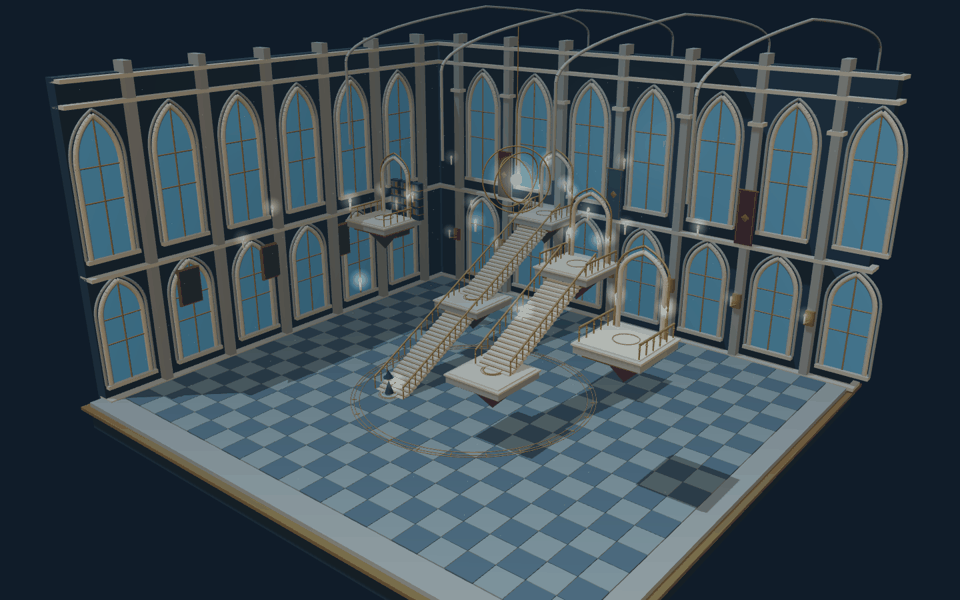
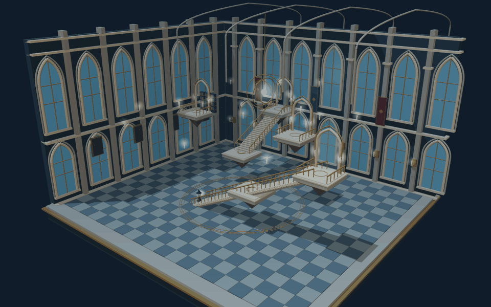

An architecture that changes its mind.
A study of position, movement, and the paths between.
Nicole Lu
Spatial AI + Computing · November 2026
Enter the interactive stair hall
nicoleluu.github.io/environment-simulations/position-movement/index.html
Two landings share one aligned flight. No intermediate landing lies between them.
The student’s elevation is higher than the entrance floor.
The student is inside the journey’s path, after departure and before arrival.
“Between” uses path order, not straight-line collinearity. Alignment changes adjacency without moving the landings.
Gold: currently aligned flights. Dashed: alternative endpoints after rotation. All active edges support travel in both directions.
A place can remain still while its neighbors change.
Each flight turns between two upper landings. When the lower and upper flights align, a gold route appears and travel becomes available.
A response to a configuration of objects: connected flights create an available path. Disconnected flights block travel. “Align my path” chooses a configuration with the fewest changed flights.

Actual simulation capture · three pivoting stair flights
The student carries a lantern spell. As they approach their selected destination, its portal wakes in turquoise light.
This capability belongs to the student. A staircase alone cannot open a portal.
Distance to the destination is less than 1.2 model units during a journey. The portal remains awake until the next journey or reset.

Actual simulation capture · entrance to winter garden
Distance to the destination decreases between consecutive samples.
The student gains elevation as they climb a flight.
The student crosses the halfway mark of the full journey. The event stays recorded.
The lantern trail makes recent movement visible. Returning along the route reverses elevation change; at rest, neither “toward” nor “ascending” is true.
Actual simulation capture · two-flight ascent
Choose Astral archive to reveal direct adjacency, then begin the ascent.
Return to the entrance. Shift the stairs and watch the observatory route disappear.
Choose Winter garden. Align the path, travel, and watch the portal awaken.
Try turning an occupied staircase. The hall holds it steady until travel ends.
Enter the hall and try the journeyThe magic is a change in spatial relationships.
Seven landings form a graph. Three rotating flights alter its edges. The student follows the shortest available route, while the rule panel exposes each condition.
Original procedural architecture inspired by magical academies and shifting-stair halls. Schematic units; decorative galleries are not walkable graph edges. No crowd or collision simulation.
Assignment: William Martin, Spatial AI + Computing, “Position + Movement,” pp. 4–8. Built with AI assistance.